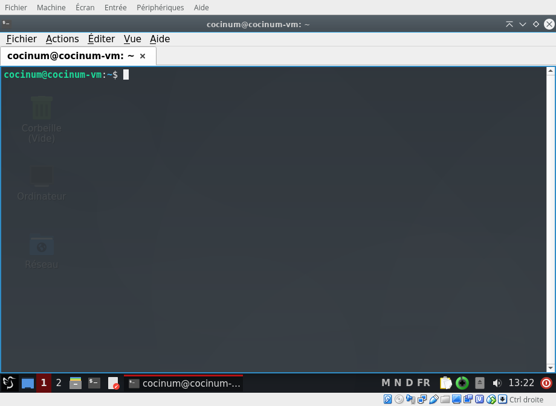

Pour faciliter l’installation des outils de développement sur votre ordinateur, et garantir une homogénéité des environnements de travail, nous fournissons une image de machine virtuelle équipée d’un système d’exploitation Linux minimal.
Des explications complémentaires sont disponibles en annexe, si vous souhaitez installer les logiciels vous-même sans utiliser la machine virtuelle fournie.
Dans ce cas, vous devez également télécharger les fichiers sources de base de cette activité.
Pour la plupart d’entre vous, les instructions ci-dessous suffisent.
.vbox-extpack) s’installe en ouvrant VirtualBox et en allant dans Outils → Paramètres → Extensions.CoCiNum.ova :
CoCiNum.ova que vous avez téléchargé.
cd $HOME/CoCiNum/ghdl-demo/tests
make
La commande make ci-dessus démarre la simulation d’une entité VHDL.
Le simulateur est associé à une interface graphique simple écrite en Python :
les appuis sur le bouton mettent à '1' une entrée de l’entité ;
la couleur du disque correspond à l’état d’une sortie de l’entité.
Si vous obtenez ce message avec un code d’erreur E_INVALIDARG (0x80BB0004),
il est possible que votre fichier CoCiNum.ova soit incomplet ou corrompu, peut-être à cause d’une interruption du téléchargement.
Si vous obtenez ce message avec un code d’erreur E_INVALIDARG (0x80070057),
vous pouvez tenter la procédure suivante :
CoCiNum.ova en utilisant un logiciel comme 7-zip, par exemple.
Vous devez obtenir un fichier CociNum_disk_001.vmdk.
Si la décompression échoue, il est possible que votre fichier CoCiNum.ova soit incomplet ou corrompu, peut-être à cause d’une interruption du téléchargement.CociNum_disk_001.vmdk.Si vous obtenez le message d’erreur « Implementation of the USB 2.0 controller not found! », cela peut signifier deux choses :
Vous pouvez résoudre ce problème de deux manières :
L’exécution de la machine virtuelle nécessite le support matériel de la virtualisation sur votre PC.
Si vous obtenez l’erreur « Not in a hypervisor partition », suivie de « VT-x is disabled in the BIOS », ou « AMD-V is disabled in the BIOS », vous devez redémarrer votre PC et entrer dans la configuration du BIOS pour activer le support de la virtualisation.
La procédure exacte varie selon les modèles de PC et il est difficile de donner plus de détails. La technologie de virtualisation à activer se nomme :
Si vous ne pouvez vraiment pas activer cette option, vous devez modifier la configuration de la machine virtuelle pour désactiver l’accélération (Configuration → Système → Accélération).
Dans VirtualBox 6.1, on ne peut pas désactiver l’accélération. Vous devez utiliser une version antérieure.
Différents problèmes peuvent se présenter :
Les personnes qui ont eu ces problèmes ont pu les résoudre de différentes manières :